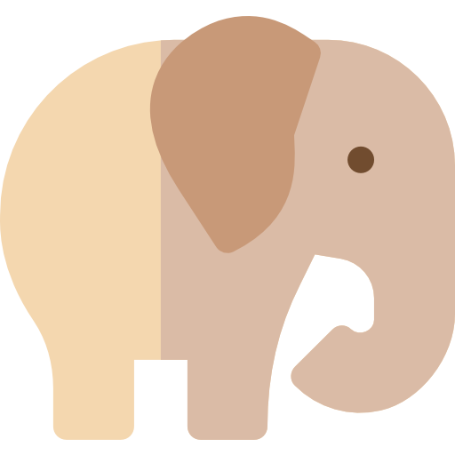

AFRICA
Namibia
Australia
Africa
Malaysia
Bucket list

PHOTO
ANIMAL
ENJOY
Swakopmund
스와코프문트 자전거여행
소요시간 : 2시간
가격 : 32,145₩
독특한 사막 사이클링 경험에 동참하고 마른 강바닥과 놀라운 모래 언덕을 타세요.
세계에서 가장 오래된 사막의 경관을 감상하고
더 큰 언덕에서 내리막 길을가는 즐거움을 즐기실 수 있습니다.
Quadbike
쿼드바이크
쿼드바이크를 타고 스와코프문트 사막을 달립니다.
당신의 질주 본능으로 자유롭게 사막을 돌아다니세요.